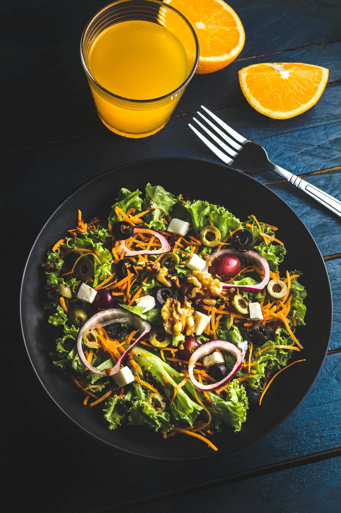

Resepmu akan muncul di sini.
📸 Inspirasi Menu



Masukkan bahan yang ada di kulkasmu, pilih mood masak, dan biarkan AI meracik resep spesial untuk Sahur & Buka Puasa.
Resepmu akan muncul di sini.

Agar tetap bugar selama menjalankan ibadah puasa 🌙
Pastikan minum minimal 8 gelas air dari buka hingga sahur untuk menjaga hidrasi.
Pilih gandum atau nasi merah saat sahur agar energi bertahan lebih lama seharian.
Lengkapi piringmu dengan protein dan serat untuk rasa kenyang yang lebih awet.